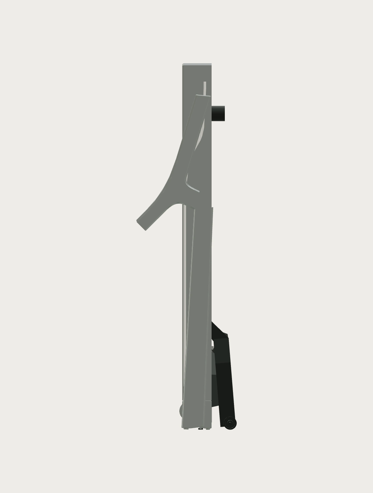
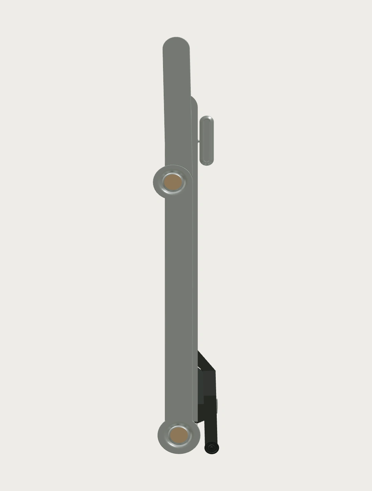
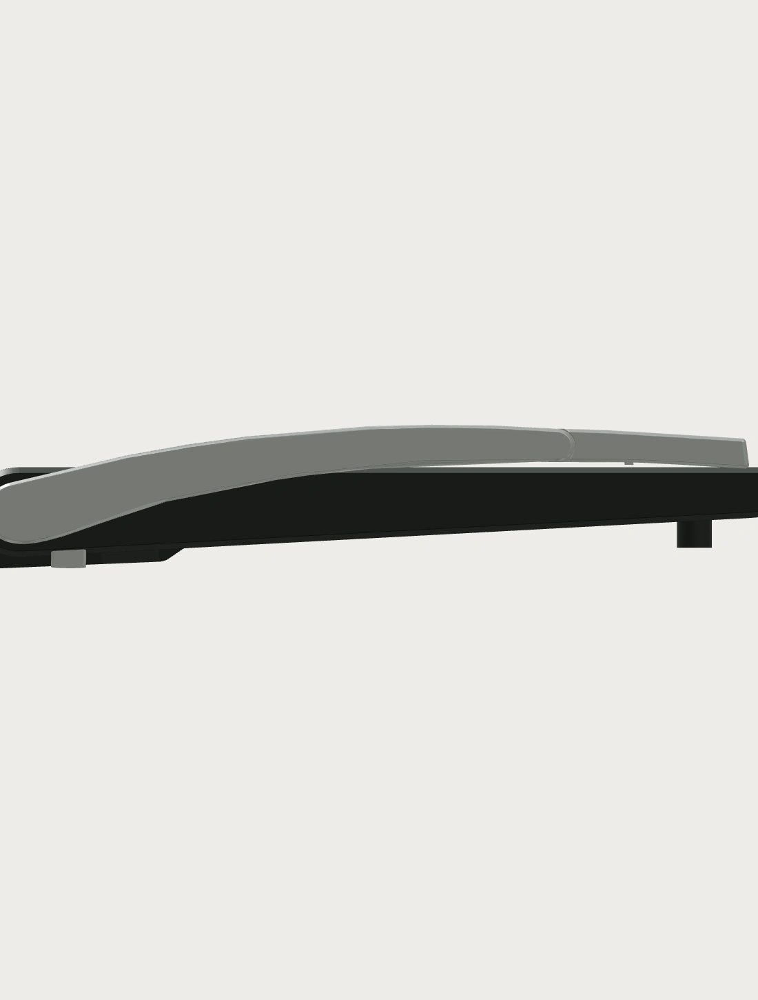

LINEAR / UPRIGHT CORRECTION凌序 · 垂直地面90°
按同事截图纠正竖放姿态。机身保持垂直，抬升架在收拢范围内与机身共同接地。
 90°姿态重做的镜面居家效果 · AI材质与场景，待评审
90°姿态重做的镜面居家效果 · AI材质与场景，待评审
原STEP网格 · 正侧视。机身90°；原件单位缩放，轮组与机身端部同一地面。抬升架约−19.53°为这一展示姿态的拟合值，不作为机械止挡或锁止尺寸。另两款也已回查

曜影：90°竖放与同事侧视方向一致；发现隐藏零件参与接地计算，令可见轮组离地约14毫米，已修正为可见轮组接地。原几何与角度保留。稳定性、锁止未验证。
星弧：当前模型仅开放原轴线的扶手翻转、立柱折平；固定下梁与抬升架不跟随立柱。未发现凌序的75.5°竖放算法；当前未开放竖放，支撑关系与竖放接地仍待核对，不能归为已经正确。